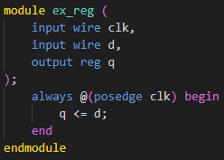

Please select one of "reg" and "wire" and fill in the spaces below.
1. In an always block, variables assigned values must be declared as .
2. The default type for undeclared signals in Verilog is .
3. For combinational logic described using an assign statement, the output signal should be declared as .
4. To store the state in a flip-flop or register, the signal type should be .
5. In a sensitivity list for combinational logic, signals that are part of the condition must be of type .
6. When you need to hold a value across clock cycles, the signal must be declared as .
7. For a multiplexer output defined using an always @(*) block, the output should be declared as .


`wire`: Used for combinational logic and signal connections, cannot store values, driven by `assign` statements. `reg`: Used for sequential logic, can store values, assigned within always blocks. Reminders: ・Variables assigned within an always block must be of type reg. ・If a signal is not explicitly declared as wire or reg, it defaults to wire.